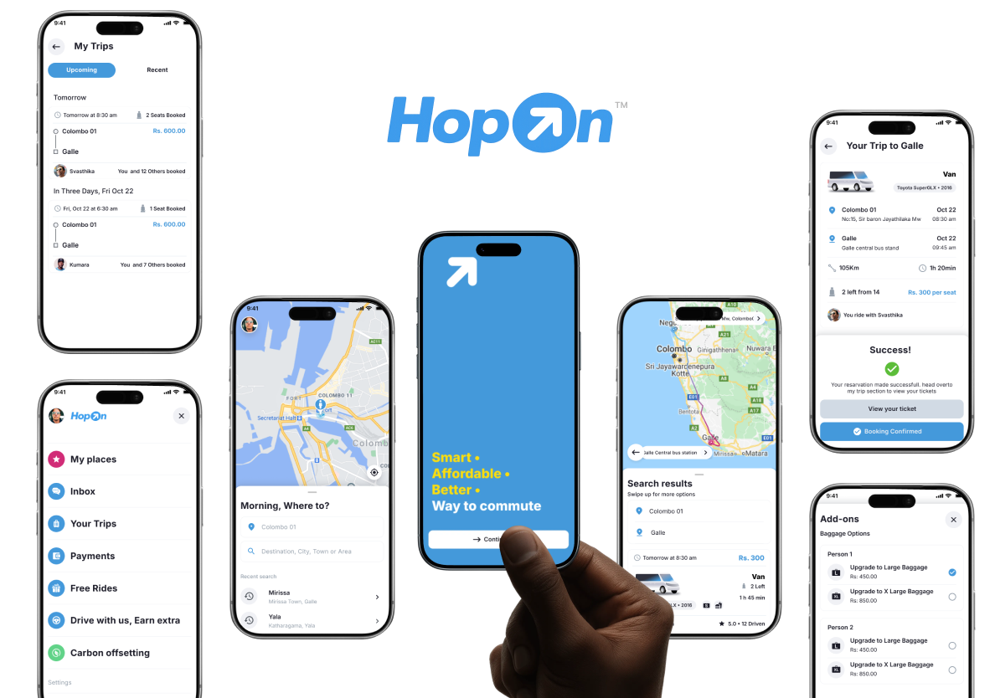
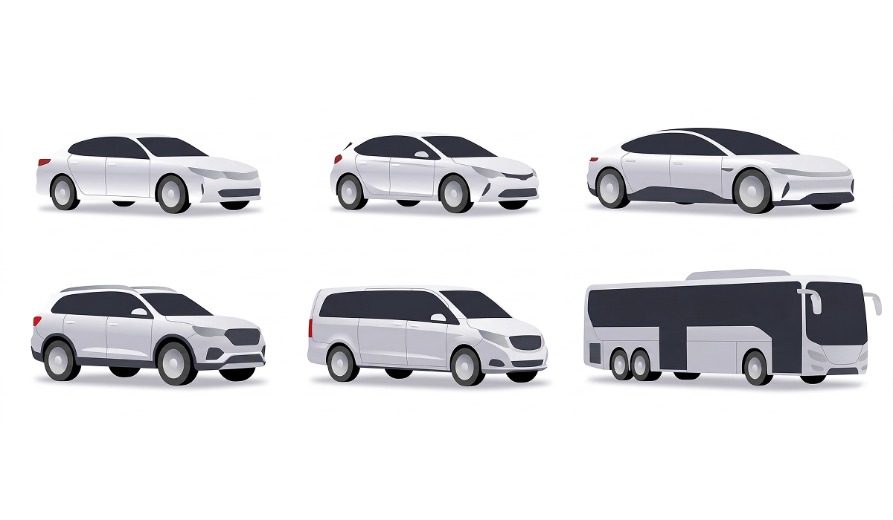
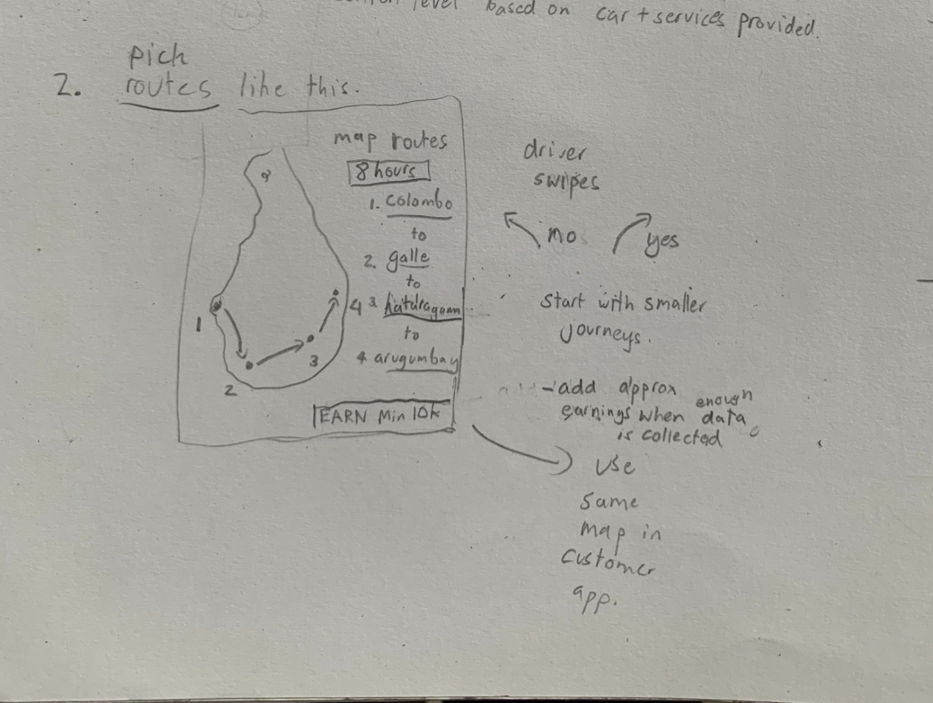
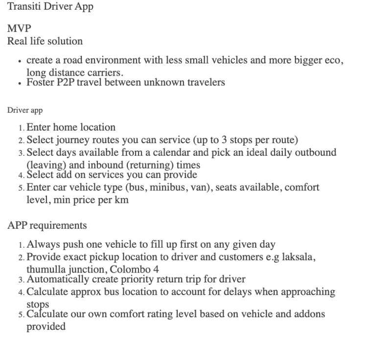
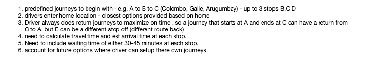
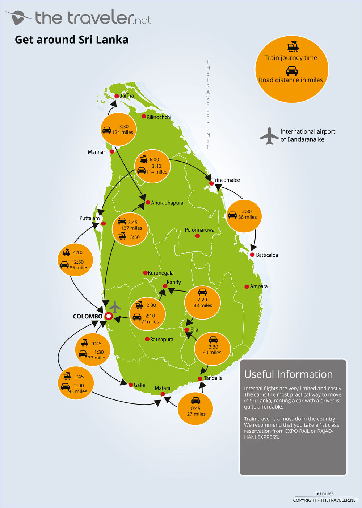
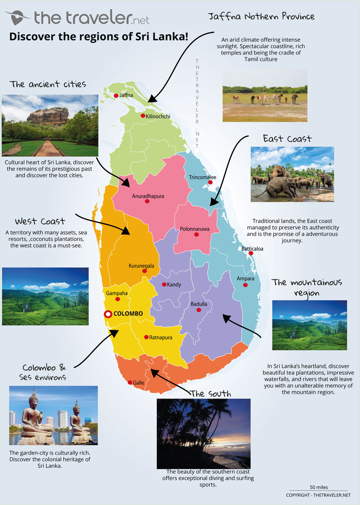

"If route certainty goes up, booking anxiety goes down."
HopOnTM
Code name TransityTM - Shared Transit Platform for Long - Distance & Tourist Travel
DESCRIPTION
HopOnTM is a shared transit platform designed to make long-distance travel more affordable, transparent, and efficient by allowing drivers to publish planned journeys and riders to join them along the same route.
Unlike on-demand ride-hailing services, HopOn focuses on scheduled, destination-based travel. Drivers define public pickup and drop-off points, available seating, luggage capacity, and pricing in advance, while riders discover and book trips that already align with their travel plans. The experience is optimized for intercity routes commonly used by tourists and locals, such as Colombo to southern coastal towns or major regional hubs.
The product was intentionally designed to scale beyond private cars, supporting vans, minibuses, and even public transport operators within the same system.
CONTEXT
In mid 2019, Sri Lanka was experiencing a strong tourism surge, with increasing demand for intercity travel. While platforms like Uber and PickMe addressed short, on-demand trips effectively, they were poorly suited for longer, planned journeys. Travelers either had to rent entire vehicles at high cost or rely on rigid public transport options with limited comfort and visibility.
HopOnTM was conceived to bridge this gap by treating travel as a published plan rather than an instant request. The system enables drivers who are already traveling long distances to share unused capacity, reducing individual travel costs, while riders gain access to flexible, affordable options without committing to full vehicle hires.
Special emphasis was placed on trust, safety, and clarity through public pickup points, identity verification, transparent pricing, and structured communication - making shared travel feel predictable and socially acceptable. The project progressed through full UX design and early development but was ultimately paused due to the COVID-19 pandemic, which fundamentally changed travel behavior and safety expectations around shared rides.
"Trust signals should appear before seat selection, not after checkout."
Hypothesis 02 • Trust-First Flow"Visible identity and trip rules increase first-time trust."
Concept • Trust Layer"Amenity transparency beats lowest-price sorting for long rides."
Concept • Decision Clarity


Turning empty seats into shared journeys - designing a platform where drivers publish routes and riders hop on.
Introduction
HopOnTM is a shared transit platform designed to make long-distance travel in Sri Lanka more affordable, transparent, and efficient. Instead of hailing a ride on demand, drivers publish planned journeys with predefined routes, available seats, and pricing - and riders discover and book trips that already align with where they need to go.
The concept was simple but underserved: most vehicles traveling between cities carry empty seats. A bus heading from Colombo to Galle has unused capacity. A van running daily to Arugam Bay leaves with rows unfilled. HopOn was designed to capture that wasted capacity and turn it into shared, affordable, point-to-point travel.
This was not a ride-hailing app. It was a journey marketplace - optimized for scheduled, destination-based travel rather than instant, location-based pickup. Drivers set routes, times, and conditions in advance. Riders browsed, compared, and booked. The entire model was built around predictability over immediacy.
I led product vision, end-to-end UX design, and early business modeling for HopOn from 2020 through early 2021. The project progressed through full UX design and prototyping but was ultimately shelved when COVID-19 fundamentally changed travel behavior and safety expectations around shared rides.
Original stakeholder concept sketch that framed the first Trancity (HopOn) product logic and flow.


Early concept artifacts used to align stakeholders on scheduling logic, route structure, and marketplace behavior before high-fidelity design.
My Role
I owned the product vision and experience design end-to-end - from initial concept through to high-fidelity prototypes and developer handoff. This wasn't a client project with predefined requirements. I shaped the product strategy, defined the user flows, and designed the interaction model from scratch.
My responsibilities included:
- Product vision and system thinking - defining what HopOn should be, how it should work, and what it should not try to do
- End-to-end UX flows - driver journey publishing, rider discovery and booking, pricing logic, route management, and trust/safety frameworks
- Interaction design and screen flows - high-fidelity screens in Sketch, interactive prototypes in Principle, and flow diagrams in Whimsical
- Early business and monetization modeling - pricing formulas, driver economics, commission structures, and MVP scoping
- Prototyping and handoff - detailed specifications for the development team to build from
Research & Discovery
Before designing any screens, we spent significant time understanding how people actually travel long distances in Sri Lanka - the pain points, workarounds, and unmet needs that existing solutions failed to address.
The Intercity Travel Landscape
In early 2020, Sri Lanka was experiencing strong tourism growth. Intercity travel demand was rising, but options were polarized: either expensive private vehicle hires or rigid public transport with limited comfort and visibility.
On-demand ride-hailing platforms had established themselves in urban areas - short trips within cities worked well. But these platforms were fundamentally designed for instant, point-to-point urban rides. They were not built for planned, multi-stop, long-distance journeys where a driver might travel from Colombo through Galle to Katharagama to Arugam Bay over 8 hours.
The result was a fragmented landscape: tourists overpaid for private hires, locals squeezed onto overcrowded public buses, and thousands of seats in private and commercial vehicles traveled empty every day between cities.


Colombo
Popular Tourist Corridors
Intercity demand around Sri Lanka
Select a destination to see distance, travel context, and why riders choose that route.
Selected destination
Kandy
Temple of the Tooth, hill-country climate, and cultural festivals.
Distance
~115 km from Colombo
Road time
Approx 3 to 3.5 hours by road
Kandy to Ella: ~138 km • Kandy to Trincomalee: ~180 km
Distance values are approximate road estimates and can vary by traffic, route choice, and pickup stop count.
Custom map composition using Sri Lanka distance and region references, overlaid with HopOn route interactions.
Market Signals Behind the Idea
Before finalizing the product scope, we looked at source-backed global signals that pointed to one pattern: transport cost pressure was rising, affordability concerns were increasing, and app-based ride behavior was becoming mainstream.
Signal 01
Transport Cost Proxy: Brent Crude
Annual average spot price (USD per barrel), 2020-2024
- 2020
- 2021
- 2022
- 2023
- 2024
- 2020$41.96
- 2021$70.86
- 2022$100.93
- 2023$82.49
- 2024$80.52
Signal 02
Affordability Pressure: World CPI Inflation
Global annual inflation rate (%), 2020-2024
- 2020
- 2021
- 2022
- 2023
- 2024
- 20201.91%
- 20213.48%
- 20227.99%
- 20235.87%
- 20242.97%
Signal 03
App-Based Mobility Adoption: Uber Q4 Growth
Uber platform Q4 operational trend from SEC filings (2020-2024)
Monthly Active Platform Consumers (millions)
Trips (millions)
- 2020
- 2021
- 2022
- 2023
- 2024
- MAPCs93m → 171m
- Trips1,443m → 3,068m
Sources: FRED series DCOILBRENTEU (Brent, data from U.S. EIA), World Bank indicator FP.CPI.TOTL.ZG (world CPI inflation), and Uber SEC Q4 earnings releases for 2020, 2021, 2022, 2023, and 2024.
Where Existing Platforms Fell Short
We analyzed the dominant ride-hailing platforms operating in Sri Lanka and studied shared transit models that had gained traction in other markets - particularly in North America and Europe. The gap was consistent:
On-demand models don't serve long-distance
Incumbent ride-hailing platforms treat every trip as an instant request. A driver is dispatched based on proximity, not route alignment. For an 8-hour intercity journey, this model breaks down entirely.
No route publishing
No platform let drivers announce planned journeys in advance. A minibus operator running Colombo to the southern coast daily had no way to publish that route and let travelers discover it.
Vehicle diversity ignored
Ride-hailing focused on private cars and three-wheelers. Vans, minibuses, and larger vehicles - the backbone of Sri Lankan intercity transport - had no place in these systems.
No comfort transparency
Travelers had no way to evaluate journey quality before booking - air conditioning, luggage space, comfort level, or driver behavior. You booked blind and hoped for the best.
Shared transit platforms in North America had proven the model worked - drivers publishing planned long-distance routes and travelers joining them.
But these were designed for Western infrastructure, car-centric culture, and different trust dynamics. The model needed fundamental rethinking for Sri Lanka.
Validating the Concept
Before committing to design and development, we conducted both qualitative and quantitative research with selected members of the public - intercity travelers, daily commuters, tourists, and vehicle owners. We wanted to validate not just whether people would use a shared journey platform, but how they felt about the specific mechanics: pre-booking seats with strangers, paying online only, sharing ride details with known contacts, and trusting driver-published schedules.
We also presented graphical interface prototypes to participants and compared their reactions against their current experiences with local ride-hailing and public transport. The findings were decisive:
78%
Would Use
Of surveyed intercity travelers said they would try a shared journey platform if pricing was lower than private hire and the driver was verified
92%
Price Driven
Said cost was their primary decision factor for intercity travel - ahead of comfort, speed, and convenience
65%
Trust Gap
Expressed hesitation about sharing a vehicle with strangers for long distances - confirming that trust mechanisms were critical to the product's viability
When we showed prototype interfaces side by side with the existing ride-hailing experience, participants consistently preferred the journey marketplace model - the ability to browse options, see driver profiles, read ratings, compare pricing, and pre-book rather than request and wait. The prototype's transparency resolved the trust concerns that the statistics had surfaced.
Qualitative interviews reinforced a critical finding: people did not want another taxi app. They wanted something closer to a flight or bus booking experience - browse available journeys, compare options, and commit with confidence. This shaped every design decision that followed.
Understanding Drivers
A core insight from early research was that HopOn's success depended entirely on the driver experience. If drivers didn't find value in publishing journeys, there would be no supply for riders to discover. We talked to intercity bus operators, van drivers, and private vehicle owners who regularly traveled long distances.
I drive to Galle and back three times a week with empty seats.
Insight
Regular route drivers had consistent unused capacity. These were not one-off trips - they were predictable patterns that could be turned into bookable journeys.
I need to know I'll cover fuel costs before I leave.
Insight
Drivers needed guaranteed minimum returns. The fare model had to ensure drivers hit their per-kilometer threshold regardless of how many riders booked.
Passengers ask for AC, no music, or stops for food. I want to set that upfront.
Insight
Drivers wanted control over journey conditions. Add-on preferences needed to be declared at publishing time, not negotiated mid-trip.
I always come back the same day. The return trip is always empty.
Insight
Return journeys were a massive untapped opportunity. Auto-generating return trips would double available inventory without any additional driver effort.
Understanding Riders
We also spoke to travelers - both locals and tourists - who regularly made intercity trips. Their frustrations aligned closely with the gaps we had identified in the platform landscape:
I paid three different prices for the same Colombo to Ella trip in one month.
Insight - Price opacity
Hiring a private vehicle meant negotiating with individual drivers, with prices varying wildly. No standardized pricing, no way to compare options. Riders had zero price confidence before committing.
I just want to know if there's AC and space for my bags before I book.
Insight - Comfort uncertainty
Public buses were affordable but offered no guarantees on comfort, luggage space, or arrival time. Riders wanted to know exactly what they were getting before they committed.
I won't get in a stranger's van for six hours without knowing who they are.
Insight - Safety concerns
Sharing a vehicle with strangers required trust. Riders wanted identity verification, public pickup points, and structured communication rather than random encounters.
The bus leaves at 6 AM or not at all. That doesn't work for me.
Insight - Schedule rigidity
Public transport ran on fixed timetables that often didn't align with traveler plans. Riders wanted flexibility without the cost of a private hire.
Route System and Journey Structure
Through driver interviews and route analysis, we developed the journey model that would become HopOn's foundation:
Colombo to Galle to Katharagama to Arugam Bay - up to 3 stops per route.
Predefined multi-stop routes
Drivers define a journey as A to B to C with up to 3 intermediate stops. Each stop maps to a predefined public pickup point - recognizable locations like bus stations, junctions, and landmarks - not GPS pins on random streets.
Enter your home location. We'll show the routes nearest to you.
Home-based route matching
Drivers enter their home location. The system surfaces routes closest to their starting point, making it effortless to discover and publish journeys they would naturally take.
Publish outbound, get the return trip free.
Automatic return journeys
If a driver publishes A to C outbound, the system auto-creates C to A as a return trip. The intermediate stop can differ on return - reflecting real driver behavior where they might take a different route back.
Pick your days, set your departure times. Done.
Scheduled availability
Drivers select which days they are available for hire and set outbound and inbound departure times. This created a predictable schedule that riders could rely on.
30-45 minutes at each stop. Enough time for delays and boarding.
Travel time estimation
The system calculates estimated arrival at each stop based on route distance and historical travel times. A 30-45 minute waiting window is built into each intermediate stop to account for delays and passenger boarding.
Predefined journey model and scheduling concept docs used to structure Colombo-Galle-Katharagama-Arugam Bay route logic.
Pricing Model
One of the most complex design challenges was creating a fare model that worked for both drivers and riders. We needed to ensure drivers covered their costs while keeping fares affordable enough to compete with public transport.
The formula we developed was segment-based:
Journey price per passenger = (segment distance x rate per km) / number of passengers on that segment
Drivers set a minimum return per kilometer (e.g., LKR 80/km). The system ensures the total fare across all passengers on any segment meets or exceeds that threshold.
This approach meant:
Fares decrease as more riders join
The cost is shared, incentivizing drivers to accept more passengers and riders to book routes with higher occupancy.
Partial routes are priced fairly
A rider going Colombo to Galle only pays for that segment, not the full Colombo to Arugam Bay distance.
Drivers have guaranteed minimums
Even with just one passenger, the fare covers the driver's per-km threshold. Additional passengers are pure upside.
Transparency for riders
The fare breakdown shows exactly how the price was calculated - distance, rate, and passenger count. No surge pricing, no hidden fees.
The Problem Space
Synthesizing driver interviews, rider research, and competitive analysis, we identified four core problems that defined our design challenge:
1
No Marketplace for Scheduled Long-Distance Travel
Intercity travel in Sri Lanka existed in two extremes: expensive private hires or rigid public transport. There was no platform where drivers could publish planned journeys and riders could discover, compare, and book seats on those trips.
Example
A van operator running Colombo to Arugam Bay three times weekly had no way to announce available seats. Travelers heading the same direction had no way to find him. Both sides relied on word of mouth, roadside signage, or luck.
Impact
Thousands of available seats traveled empty daily between Sri Lankan cities. Travelers overpaid for private hires or crammed into public buses. Drivers missed revenue. Everyone lost.
2
Trust Deficit in Shared Travel
Sharing a vehicle with strangers for a multi-hour journey requires a fundamentally different level of trust than a 15-minute city ride. Neither existing ride-hailing platforms nor informal arrangements provided the safety infrastructure needed for long-distance shared travel.
Example
A solo female traveler going from Colombo to Ella had no way to verify a driver's identity, check vehicle condition, or share trip details with family. The same driver had no way to screen passengers or set ground rules for a 6-hour journey.
Impact
Potential riders - especially tourists and solo travelers - defaulted to expensive private hires or avoided intercity travel entirely. The shared transit model couldn't grow without trust infrastructure.
3
Driver Economics Were Unclear and Unprotected
Drivers making long-distance trips had no way to calculate whether taking passengers would actually be profitable. Fuel costs, vehicle wear, waiting time at stops, and empty return legs all ate into potential earnings with no visibility or guarantees.
Example
A private vehicle owner considering offering seats on a Colombo to Galle trip could not answer basic questions: What should I charge per seat? Will I cover fuel? What if only one person books? What about my return trip?
Impact
Without economic clarity, drivers would not participate. Without drivers, there would be no supply. The entire marketplace depended on making driver economics transparent and guaranteed.
4
Rigid Platforms vs. Flexible Reality
Existing platforms forced travel into rigid models - either fully on-demand or fully scheduled. Sri Lankan intercity travel was neither. Drivers had regular patterns but flexible timing. Riders wanted options but not rigid timetables. The platform needed to accommodate this middle ground.
Example
A driver heads to Katharagama every Thursday but sometimes leaves at 6 AM, sometimes at 8 AM. He might add a stop at Galle if a passenger requests it. No existing platform could handle this combination of regularity and flexibility.
Impact
Drivers were forced into either fully rigid schedules (which they abandoned) or fully informal arrangements (which riders couldn't discover). The sweet spot - structured flexibility - had no digital home.
Our research revealed a core tension: long-distance travel needs the predictability of scheduled transport combined with the flexibility of on-demand services.
HopOn was designed to live in that middle ground - structured enough to be discoverable, flexible enough to match how people actually travel.
The Challenge
Beyond the market gaps, HopOn faced significant product and operational constraints that shaped every design decision:
Two-sided marketplace cold start
Riders would not come without drivers. Drivers would not publish without riders. We needed a strategy to bootstrap supply before demand existed - starting with larger commercial operators who already ran regular routes.
Trust and safety for multi-hour journeys
Sharing a vehicle with strangers for 6-8 hours is fundamentally different from a 15-minute city ride. Identity verification, public pickup points, structured communication, and trip sharing were non-negotiable trust elements.
Vehicle diversity
The platform had to support private cars, vans, minibuses, 4x4 vehicles, and even public transport operators within the same system. Each vehicle type had different seat counts, comfort levels, luggage capacity, and pricing expectations.
Segment-based pricing complexity
Multi-stop routes meant different passengers could join and leave at different points. The fare model had to calculate per-segment pricing, handle partial routes, ensure driver minimums, and remain transparent to riders - all in real time.
Sri Lankan infrastructure realities
Variable road conditions, inconsistent GPS accuracy in rural areas, unreliable mobile connectivity on certain routes, and a population with varying levels of smartphone literacy. The app had to work within these constraints, not assume them away.
COVID-19 pandemic
The project launched in early 2020, just before the global pandemic fundamentally changed how people felt about sharing enclosed spaces with strangers. Travel demand collapsed, safety expectations shifted, and the core value proposition of shared transit became temporarily untenable.
Vehicle type showcase used to communicate comfort, capacity, and pricing expectations across the HopOn marketplace.
Goals
BUSINESS GOALS
Capture wasted seat capacity
Turn the thousands of empty seats traveling between Sri Lankan cities daily into a bookable, revenue-generating inventory. Focus on larger vehicles first - buses, vans, and minibuses - where unused capacity is highest and commercial operators are already motivated to fill seats.
Build supply before demand
Bootstrap the marketplace by onboarding commercial operators who run regular routes. These drivers provide consistent, reliable supply that riders can discover. Private vehicle owners join later once the marketplace has proven its value.
Prove the model before expanding
Validate the shared transit concept on high-traffic Sri Lankan corridors (Colombo to southern coast, Colombo to hill country) before considering expansion to additional routes or markets.
USER GOALS
Let drivers monetize regular routes effortlessly
Publishing a journey should take under 2 minutes. Set home location, pick a route, declare vehicle and seats, set preferences, publish. Return trips auto-generate. Pricing calculates automatically. No negotiation required.
Give riders transparent, affordable options
Riders should be able to search a route, see available journeys with clear pricing, vehicle type, comfort level, and driver information - then book with confidence. No hidden fees, no blind bookings, no negotiation.
Make shared travel feel safe and predictable
Public pickup points at recognizable locations. Driver and vehicle verification. Trip sharing with family. Structured communication. Comfort and add-on transparency before booking. Every element designed to make sharing a vehicle with strangers feel socially acceptable and trustworthy.
Our Users
Through research and interviews, we identified four primary user archetypes - two on the driver side and two on the rider side - each with distinct motivations, constraints, and expectations:
Commercial Route Operator
Bus or van operator who runs the same intercity route on a regular schedule - typically 3-5 times per week. Owns or leases a commercial vehicle with 8-40 seats. Motivated by filling unused capacity and generating additional revenue on trips they are already making.
JOBS-TO-BE-DONE
When I'm planning my weekly routes, I want to publish my schedule and available seats in one place, so travelers can find and book my trips without me having to manage inquiries through calls, messages, or roadside signage.
Occasional Long-Distance Driver
Private vehicle owner making a one-off or semi-regular long-distance trip - visiting family, going on holiday, attending a work event outside Colombo. Has 1-3 empty seats and would share the journey to offset fuel costs.
JOBS-TO-BE-DONE
When I'm driving to Ella next weekend anyway, I want to offer my spare seats to travelers heading the same direction, so I can cover part of my fuel and toll costs without going out of my way.
Budget-Conscious Local Traveler
Sri Lankan resident traveling between cities for work, family visits, or personal reasons. Price-sensitive but willing to pay a premium over public transport for comfort, reliability, and time savings. Values schedule predictability and clear pricing.
JOBS-TO-BE-DONE
When I need to get from Colombo to Matara for a family event, I want to find a reliable shared ride that is cheaper than a private hire but more comfortable than a public bus, so I can travel affordably without sacrificing my time or comfort.
Tourist / Visitor
International or domestic tourist exploring Sri Lanka's coastal, hill country, or cultural triangle routes. Often unfamiliar with local transport options, language, and geography. Values safety, comfort, and clear English-language communication. Willing to pay more for a trusted, transparent experience.
JOBS-TO-BE-DONE
When I'm planning my Sri Lanka trip, I want to discover reliable shared rides between tourist destinations with clear pricing and verified drivers, so I can travel independently without the stress of negotiating with strangers or navigating unfamiliar public transport systems.
Process
Driver Initial Setup
Before a driver can publish their first journey, they complete a one-time onboarding process. We designed this as a guided setup rather than a registration form - each step collects information that directly serves trust, safety, rider transparency, comfort matching, and regulatory compliance.
Drivers can serve multiple destinations, but only one at a time - this constraint keeps the experience simple and ensures each journey gets the driver's full attention.
1
Account Registration and Verification
Driver creates an account with their name, email, secondary mobile number, NIC number, and password. Mobile verification uses a 4-digit OTP code sent via SMS - a deliberate choice for the Sri Lankan market where phone-first authentication is more trusted than email-only. The verification flow includes a resend timer to handle network delays common in rural coverage areas.
Mobile OTP
NIC Number
Email
Secondary Mobile
2
Trust Profile: Gender, Photo, and Bio
Drivers select their gender (male, female, or other) because "members feel safer knowing who they're travelling with." The profile photo screen enforces quality guidelines - full face, well-lit surroundings, no shades or hats, just the driver - with the explicit message that clear photos increase trust and generate more bookings. A short bio section lets drivers introduce themselves to the community in their own words, making the platform feel personal rather than transactional.
Gender
Profile Photo
Bio
3
Document Verification
The welcome screen presents a clear checklist of required documents: driving license, vehicle insurance, revenue license, and vehicle registration document. Each item shows a completion status with green checkmarks. Drivers can submit all documents immediately or continue and add them later - but full account approval requires all four. This progressive approach avoids abandonment from drivers who don't have every document on hand during signup.
Driving License
Vehicle Insurance
Revenue License
Vehicle Registration
4
Add Vehicle: Model and Type
Vehicle setup uses a searchable model database - the driver types a manufacturer name and selects from matching models (e.g., searching "Toyota Hiace" shows a filtered list). Vehicle type selection uses visual cards showing the vehicle silhouette, category name, and seat capacity: Eco Car (hybrid/electric only, 3 seats), Mini Bus (12-15 seats), or Van (5-7 seats). Each selection is manually verified by a platform agent to prevent misrepresentation.
Searchable Models
Eco Car
Mini Bus
Van
Agent Verified
5
Add Vehicle: Color, Year, and Licence Plate
Drivers pick from a curated color palette rather than typing free text - ensuring consistent vehicle identification for riders at pickup points. Year of manufacture uses a scroll picker. The licence plate (e.g., WP-CCC-2222) helps riders confirm they are boarding the correct vehicle, a critical safety detail for public pickup point scenarios where multiple vehicles may be present.
Color Picker
Manufacture Year
Licence Plate
6
Luggage and Seating Allocation
Luggage capacity uses visual size cards: No luggage, Medium (40x55x20cm, 10kg - carry-on), or Large (110x119x81cm, 30kg). The app explicitly advises that more luggage space attracts long-haul travelers. Seating allocation is a deliberate design decision - drivers are encouraged to pledge fewer seats than the actual vehicle capacity for better rider comfort and better reviews. This trade-off between revenue and experience was surfaced transparently.
No Luggage
Medium
Large
Seat Pledge
7
Vehicle Facilities and Accessibility
The final setup screen captures the vehicle's comfort and accessibility features through a toggle list. Sri Lanka's southern and eastern coasts attract surfers and adventure travelers, so surfboard friendliness became a genuine differentiator for coastal routes. Wheelchair accessibility was included from day one - an inclusive design decision. Drivers can always update these facilities when scheduling individual trips, keeping the profile flexible as vehicles change.
Surfboard Friendly
Extra Recline Seats
Air Conditioning
Wheelchair Friendly
Pet Friendly
Once all vehicle details are complete, each item in the checklist turns to a green checkmark - giving drivers a clear sense of progress and completion. The vehicle profile is saved and displayed as a card in the Vehicles section showing the model, type badge, color, year, and plate number - exactly as riders will see it in search results.
Driver onboarding sequence


Vehicle setup and verification sequence


Driver App: Journey Publishing Flow
The driver experience was designed around one core principle: publishing a journey should feel as natural as setting an alarm. The driver's home screen is a map of Sri Lanka centered on their home base, with their earnings balance prominently displayed and an "You're online" status indicator. Below the map, an "Earn more" section surfaces gamified challenges ("12 Trip in a Day Challenge - 2/12 completed") and seasonal demand alerts to drive engagement. Upcoming trips are listed with schedule details covering both outbound and inbound legs. From here, publishing a new trip is one tap away.
The publishing flow worked in five steps:
1
Home Location
Driver searches and sets their home town on a full map view of Sri Lanka. This anchors all route suggestions to their starting point. The map-first approach made location selection intuitive - drivers simply search or tap their town rather than typing addresses. The home base can always be updated later in the "My Place" settings.
2
Select Route
From the map-based dashboard, the driver enters a destination and adds up to 3 intermediate stops. Each stop maps to a predefined public pickup point. The map visualizes the full route across Sri Lanka, showing the driver exactly which pickup points their journey will serve.
3
Schedule
Driver selects the pickup date and sets a departure time window (e.g., 4:00-5:00pm) with a "Sweet" time suggestion highlighted for optimal rider demand. The option to make it a recurring trip saves repeat setup. The system calculates estimated arrival at each stop automatically, and both outbound and inbound legs are scheduled from this single screen.
4
Trip Preferences and Amenities
Driver confirms luggage capacity and seating availability for this specific trip (which can differ from the vehicle default). The amenities toggle list lets drivers enable or disable facilities per trip - surfboard friendly, extra recline seats, air conditioning, wheelchair friendly, and pet friendly. A compliance acknowledgment ("I understand my account could be suspended if I break the golden rules") reinforces platform standards before every post.
Luggage
Seating
Amenities
Golden Rules
5
Set Price and Post
The final screen shows the price per seat in rupees (e.g., Rs. 850.00) and gives the driver a clear "Post the Trip" action. On success, a confirmation screen with a green checkmark reads "Schedule Successful" and directs the driver to view all listed trips. The trip immediately appears on the driver's dashboard with outbound and inbound scheduling visible, and the driver can schedule additional trips from the same screen.
Price Per Seat
Post Trip
Confirmation
Once published, the return journey auto-generates with the reverse route. The driver can accept or modify it. The entire flow was designed to complete in under 2 minutes for repeat routes. A "Heading somewhere?" onboarding modal greets first-time publishers with three golden rules: be reliable and show up on time, no cash (all payments happen online), and drive safely by sticking to local police rules.
The driver's settings hub provides access to vehicle management (with vehicle cards showing model, type badge, color, year, and plate number), personal details, document uploads, payment methods (bank account linked for direct payouts), app settings (feed preferences and trip sharing), insurance, and a dedicated earnings dashboard showing weekly revenue with a "Remit to bank" action. A carbon offsetting feature was included from day one - signaling the platform's environmental values.
Driver trip publishing and route setup


Driver account, menu, and earnings


Five-step driver publishing flow - from home location to live journey in under 2 minutes
Rider App: Discovery and Booking Flow
The rider experience was designed around browsing and comparison - more like searching for flights than hailing a cab. Before accessing the marketplace, first-time riders are presented with the platform's community rules: this is not a taxi or typical ride-hailing service (meet the driver at the given pickup point, sit in any seat), respect others (you're pooling with people, minimize phone calls), no cash (all payments happen online, drivers get paid after the trip), and show up on time (it's like catching a train or bus). These rules set expectations and filter for committed users.
The rider's home menu provides access to My Places (saved locations), Inbox, Your Trips, Payments, Free Rides (referral program), a "Drive with us, Earn extra" cross-promotion for the driver app, Carbon Offsetting, and Settings. From the home screen, riders set their origin and destination on a full map view, and the system shows available journeys sorted by departure time, price, comfort level, and driver rating.
1
Search
Riders open to a full map view of Sri Lanka with a "Morning, Where to?" prompt showing their current location (e.g., Colombo 01). They enter a destination from saved places (Home, Work, and custom favorites like Mirissa, Jaffna Town, Ella, Hiriketiya), recent searches, or a "Select from the Map" option. The map shows available route corridors with pickup points marked as blue information pins across the island, making the network feel tangible before searching. The search screen is designed to minimize typing - most riders select from their history or saved locations.
2
Compare
Search results slide up over the map, showing the route highlighted visually. Results are grouped by date ("Tomorrow," "Day after Tomorrow," "Fri, Oct 22"). Each journey card displays the price in rupees per seat (e.g., Rs. 300), a vehicle photo with type badge (Van, Mini Bus, SUV, Eco Car, Big Bus), vehicle model and year (e.g., Toyota SuperGL 2016), available seats remaining ("2 Left," "8 Left"), estimated travel time, departure time, driver name with star rating and trips driven count (e.g., 5.0 with 12 Driven), and amenity icons indicating pet policy, luggage, and accessibility. New drivers are clearly labeled with a "New Driver" badge. A route swap button lets riders reverse origin and destination instantly.
3
Book
Selecting a journey opens the full trip detail screen: vehicle photo and model, driver name ("You ride with Svashthika"), the complete route with pickup and drop-off points, distance (e.g., 105km), travel time (1h 20min), and seats remaining. Amenity badges show the trip's rules (No Pets, No Smoking, Medium Baggage Ok, Extra Recline Seats). Below, riders can purchase add-ons - Extra Luggage (from Rs. 130) and Food and Drinks (from Rs. 250) - with per-person baggage upgrade options: Large Baggage (Rs. 125) or X Large Baggage (Rs. 390). A message field lets riders communicate pickup details or ask questions directly. The itinerary plan shows the full route with estimated times and intermediate stops. Pricing shows per-seat cost with the total calculated automatically for the selected seat count, and payment is handled via saved card (e.g., VISA) with a "Confirm Pay" action.
4
Track
After booking, a confirmation screen with a green checkmark reads "Booking Confirmed" and directs riders to view their ticket in the My Trips section. The "My Trips" screen splits into Upcoming and Recent tabs - upcoming trips show departure time, route, seat count, price, driver name, and co-riders count ("Yes and 7 Others booked"). The trip detail view shows the full booking summary including seats booked, total price, pickup and drop-off locations with dates, distance, travel time, vehicle details, and driver info. On the day of travel, estimated vehicle location updates in real time with delay notifications at each remaining stop. Riders can share trip details with family for safety.
Rider signup and destination setup


Rider compare, reserve, and trip management


Rider search, compare, and booking experience - transparent pricing and journey details at every step
Supply Strategy: Fill One Vehicle First
A critical product decision was the "fill one first" algorithm. When multiple vehicles were available on the same route, the system would prioritize filling one vehicle to capacity before surfacing the next one to riders.
This approach had several benefits:
- Better driver economics: A fully booked van earns significantly more per trip than two half-empty vans. Concentrating demand improved driver satisfaction and retention
- Better rider experience: Fuller vehicles meant more social proof and a livelier travel experience. An empty van with one passenger felt awkward; a van with seven felt like shared transport
- Simpler operations: Fewer active vehicles per route meant fewer coordination challenges, fewer no-shows to manage, and easier real-time tracking
The MVP deliberately prioritized larger vehicles - buses, vans, and minibuses - over private cars. More seats per vehicle meant faster fill rates, better driver economics, and a more sustainable model. Private car-sharing was planned for a future phase once the marketplace had critical mass.
Sketches and Early Exploration
I explored multiple directions through rapid sketching and flow diagramming in Whimsical before moving to high-fidelity screens. Key exploration areas included the driver dashboard layout, journey publishing wizard, rider search interface, and real-time trip tracking.
Divergent exploration - driver dashboard, rider discovery, and booking interactions

End-to-end flow mapping in Whimsical - driver publishing and rider booking journeys
Key Design Solutions
Here are the design decisions that addressed our core challenges - each grounded in research findings and validated through prototyping:
Public Pickup Points, Not GPS Pins
Instead of letting drivers and riders negotiate exact locations via GPS pins, we designed the system around predefined public pickup points - recognizable locations like Laksala in Colombo, Thumulla Junction, the Galle bus terminal, or major highway rest stops.
This solved multiple problems simultaneously: riders knew exactly where to go without GPS confusion, drivers had consistent stopping points that didn't add detour time, and the fixed locations provided natural safety through public visibility. Every booking directed riders to a known, public, well-trafficked location.
Predefined pickup points at recognizable public locations along intercity routes
Comfort and Add-On Transparency
We designed a layered system that separated permanent vehicle facilities from per-trip amenities. During vehicle setup, drivers toggle persistent facilities - surfboard friendly, extra recline seats, air conditioning, wheelchair friendly, and pet friendly. When scheduling a specific trip, drivers confirm which of these are active for that journey, plus set luggage capacity and seating availability. This distinction let drivers with air conditioning offer it on some routes but not others (e.g., short coastal trips where windows-down was preferred).
On the rider side, these appeared as clear badges on journey cards (No Pets, No Smoking, Medium Baggage Ok, Extra Recline Seats) and as paid add-on options during booking - Extra Luggage (from Rs. 130 per person) and Food and Drinks (from Rs. 250), with tiered baggage upgrades (Large at Rs. 125, X Large at Rs. 390). This created a transparent upsell model where riders paid only for what they needed, and drivers earned more from value-added services without raising base fares.
Driver Swipe-to-Accept Model
The swipe-to-accept model was not available to all riders from day one. It was a trust privilege. When a rider books a seat, the driver receives a notification card showing the passenger's pickup point, destination, profile, preferences, and any notes. During the rider's first few trips on the platform, the driver is required to manually review the rider's profile - their bio, language preferences, conversation style, and previous ratings - before approving them to join the journey. This initial friction was intentional: it protected both parties while the system gathered enough data to build trust.
Once a rider completed enough trips and earned positive ratings, they graduated to a "trusted rider" status. At this point, the driver experience simplified to a swipe gesture - right-swipe to confirm, left-swipe to decline. No forms, no menus, no workflow hunting. The trust score was a built-in point mechanism where both drivers and riders rated each other after every trip, and the accumulated score determined how much friction the system applied.
New drivers were eased in with shorter journeys first - the system initially suggested routes within a 2-3 hour radius of home before opening up longer distances. This built confidence before committing drivers to 8-hour trips.
Real-Time Delay Estimation
Sri Lankan intercity travel is rarely on time. Road conditions, weather, and traffic create unpredictable delays. Rather than pretending arrivals would be exact, we designed the system to calculate approximate vehicle location and update estimated arrival at each remaining stop in real time.
Riders waiting at intermediate stops could see whether their vehicle was on schedule, 20 minutes late, or stuck in traffic near Bentota. This transparency turned unpredictable waiting into informed waiting - a significant experience improvement.
Live delay estimation and vehicle location tracking for riders at intermediate stops
Comfort Rating System
Beyond star ratings, we designed a multi-dimensional comfort scoring system. After each journey, riders rate specific dimensions: vehicle cleanliness, driver behavior, punctuality, luggage handling, and add-on accuracy (did the AC actually work?). These scores feed into a composite comfort level visible on future journey listings. The search results displayed driver ratings alongside trips driven count (e.g., 5.0 with 12 Driven, or 4.8 with 83 Driven) - giving riders both quality and experience signals at a glance. New drivers without enough ratings received a \"New Driver\" badge rather than an empty star rating, avoiding the cold-start penalty that discourages new supply.
This gave riders granular decision-making power and gave drivers clear, actionable feedback on what to improve - not just \"3.5 stars\" but \"your punctuality is excellent, your vehicle cleanliness needs work.\"
Online-Only Payments
An early and deliberate decision was to remove cash entirely from the platform. No cash exchanges, no card swipes at pickup, no disputes about change. All payments happened online through cards saved in the app. This was not just a convenience choice - it was a safety and accountability decision.
Cash creates friction and risk in shared travel: arguments about exact amounts, drivers carrying float, riders claiming they already paid, and no audit trail for disputes. By making the platform cashless from day one, every transaction was traceable, every fare was agreed before boarding, and every payment could be reversed if something went wrong.
💳
Trip Confirmed
When a rider books, the full fare amount is placed on hold from their saved card - not charged immediately
🚐
Journey Completed
After the journey finishes successfully, the hold converts to a charge and enters a 24-hour settlement window
🏦
Driver Paid
After 24 hours with no disputes raised, the driver receives their payout via "Remit to Bank" to their linked bank account
The 24-hour settlement window was inspired by platforms like Airbnb. If a driver experienced property damage during a trip - a spilled drink on upholstery, a scratched interior panel, or luggage damage - they could raise a dispute within that window. A HopOn staff member would review the claim, determine the appropriate compensation amount, and manually authorize the charge to the rider's saved payment method. The rider was notified of the charge with the reasoning, and funds were released to the driver's original payout method. This dispute model gave drivers confidence that they were protected without requiring upfront damage deposits that would scare away riders.
Know Who You Are Traveling With
Once a driver confirms a booking, both the rider and the driver can see who else is on the trip. Before the journey starts, riders can view the profiles of their co-travelers - their name, profile photo, gender, language preferences, conversation style (prefers quiet, enjoys small talk, or loves interesting conversations), and their trust rating on the platform.
This visibility was designed for two reasons. First, safety: knowing who you are sharing a multi-hour journey with, especially on less-traveled routes, reduces anxiety. Second, comfort matching: a rider who speaks only Sinhala can see if their co-travelers and driver speak the same language. A rider who hates phone conversations in enclosed spaces can see if others share that preference. A solo female traveler can see the gender mix of the vehicle before boarding.
My Trips showed co-rider counts (e.g., "You and 7 others booked") and after confirmation, the full list of travelers with their profiles and preferences became visible - turning an anonymous shared vehicle into a transparent, predictable social experience.
HopOut: Fair Cancellation Policy
We named the cancellation feature "HopOut" - consistent with the HopOn brand language. The policy was designed to balance rider flexibility with driver income protection:
✅
Free HopOut
Cancel more than 24 hours before a pre-booked trip departure - full refund, no questions asked
⚠️
Late HopOut
Cancel within 24 hours of departure or for a last-minute booking - 45% of the fare is retained as a driver protection fee
📝
Reasoning
Riders select from system-defined cancellation reasons (schedule change, found alternative, emergency) and can add their own explanation
The 45% cut for late cancellations was calibrated carefully. Too low and drivers suffer income loss from no-shows that can't be refilled. Too high and riders feel trapped. The 45% mark compensated drivers enough to partially cover the empty seat while leaving riders willing to cancel honestly rather than simply not showing up - a worse outcome for everyone.
Built-in Safety and Security
Personal security in shared long-distance travel was a non-negotiable design pillar. We designed safety features that went significantly beyond what any existing ride-hailing platform in Sri Lanka offered at the time - including features that the leading local platform had not considered or implemented:
Live GPS Sharing with HopOn
Every active journey shared the vehicle's real-time GPS location directly with HopOn's platform. This was not optional or rider-initiated - it was a system-level feature that ran continuously during any confirmed trip. HopOn could monitor the vehicle's route in real time and flag deviations from the published path.
In-Ride Audio Recording
With consent from all passengers, the app could record in-ride audio during the journey for safety purposes. Recordings were encrypted and stored securely - only accessible by HopOn's safety team in the event of a dispute or incident report. This feature was designed as a deterrent against inappropriate behavior and as evidence if something went wrong.
Law Enforcement Data Sharing
GPS location data and trip records could be shared directly with police or law enforcement authorities when required. This was built into the platform architecture from day one - not as an afterthought privacy risk, but as a transparent safety commitment communicated to all users during onboarding.
Trip Sharing with Trusted Contacts
Riders could share their live trip details - route, driver info, vehicle details, and real-time location - with family or friends before and during the journey. This feature was particularly valued by parents of university students making regular intercity trips and by solo female travelers on unfamiliar routes.
These safety features were not just product differentiators. They represented a design philosophy: if you are asking people to share an enclosed space with strangers for hours across remote highways, the platform must take responsibility for their physical safety - not just their booking experience.
No existing ride-hailing platform in Sri Lanka had implemented in-ride recording or continuous GPS sharing with the platform. These were first-of-their-kind considerations for the local market.
What We Learned
Supply-side experience is the entire product
In a two-sided marketplace for travel, the driver experience determines everything. If publishing a journey is hard, drivers won't do it. If economics aren't transparent, drivers won't trust it. If the app interrupts their driving routine, drivers will abandon it. We learned that 80% of our design effort needed to go toward making the driver's life easier - even though riders are the paying customers.
Predefined routes beat on-demand dispatch for long-distance
The biggest conceptual breakthrough was rejecting the on-demand model entirely. Long-distance travel is inherently planned. Drivers know where they are going days in advance. Riders plan trips hours or days ahead. Matching planned supply with planned demand is fundamentally better than dispatching drivers reactively - and the UX reflected this with a discovery and booking model rather than a request and wait model.
Trust requires physical design, not just digital features
Adding ID verification badges and star ratings was necessary but not sufficient. Real trust for shared long-distance travel came from physical design decisions: public pickup points that were well-lit and visible, routes that followed main highways (not backroads), and departure times that kept travel within daylight hours by default. Trust was built through the structure of the experience, not just the interface.
Timing matters more than product quality
COVID-19 ended this project - not because the product was wrong, but because the world changed. Shared enclosed spaces with strangers went from a compelling value proposition to a public health concern overnight. We had a strong product concept, validated user needs, and working prototypes. None of that mattered when the fundamental behavior we were designing for became socially unacceptable. The lesson is humbling: external timing can override every design decision you make.
HopOn was shelved but never abandoned. The intercity travel problem in Sri Lanka hasn't been solved. Empty seats still travel between cities daily. Tourists still overpay for private hires. Locals still cramp into overcrowded buses. The concept of a journey marketplace - where drivers publish and riders discover - remains valid and, I believe, inevitable.
This project taught me more about marketplace design, supply-side thinking, and the intersection of physical and digital trust than any client engagement could. It was a product built from genuine conviction that travel should be shared, affordable, and transparent - and the design work reflects that belief at every level.
Thank you for reading through the HopOn case study.